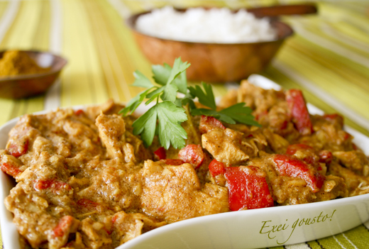

Home
Chicken korma

Welcome to the Rich Flavors of Chicken korma — a royal dish that blends tradition, taste, and aroma in every bite. Known for its creamy, spiced gravy and tender chicken, qorma is a classic of South Asian cuisine, often reserved for special occasions and festive gatherings. With its roots in Mughlai kitchens, this dish continues to be a centerpiece on dining tables across the subcontinent. Whether paired with naan or rice, chicken qorma promises a luxurious and unforgettable culinary experience.
Ingredients
- Chicken (bone-in pieces preferred)
- Yogurt
- Onions (sliced and fried)
- Ginger-garlic paste
- Oil or ghee
- Whole spices (bay leaves, cinnamon, cloves, cardamom, black pepper)
- Ground spices (red chili powder, turmeric, coriander powder, garam masala)
- Salt
- Water
- Kewra water or rose water (optional, for aroma)
- Almonds or cashews (optional, for richness)
Steps
- Heat oil or ghee in a large pot
- Add sliced onions and fry until golden brown. Remove half and set aside for garnishing.
- In the same pot, add whole spices (bay leaves, cinnamon, cardamom, cloves, black pepper).
- Let them sizzle for a few seconds to release aroma.
- Add ginger-garlic paste and sauté for a minute.
- Add chicken pieces and cook until they turn white on all sides.
- Add red chili powder, turmeric, coriander powder, and salt.
- Stir in yogurt and cook on medium heat, stirring until oil starts to separate.
- Add a little water to make gravy, cover, and cook on low heat until the chicken is tender.
- Crush the reserved fried onions and mix into the qorma.
- Sprinkle garam masala and a few drops of kewra or rose water (optional).
- Simmer for 5 more minutes.
- Serve with naan, roti, or steamed rice. Enjoy the rich, royal taste!